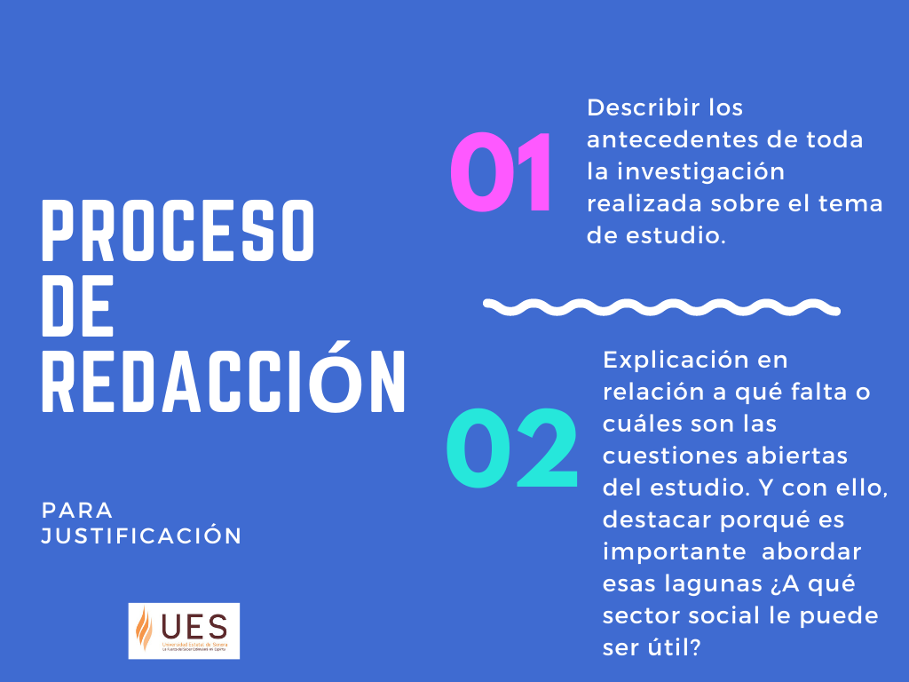

La justificación de una investigación aborda la relevancia del porqué es útil realizar la investigación. Es la argumentación de la importancia, novedad y utilidad del estudio propuesto. Expone las razones que motivaron la realización de éste y si tendrá aplicación en el contexto local, regional, nacional o internacional. Es recomendable utilizar cifras o porcentajes de investigaciones previas o datos relacionados para dejar ver la trascendencia del tema propuesto y de que se resuelva el problema.
Se debe respaldar o fundamentar la propuesta de forma convincente.
¿Es importante o prioritario realizar la investigación? ¿Qué beneficios técnicos o teóricos puede aportar? ¿Qué conocimientos prácticos puede aportar?

.
Ejemplo de redacción de una Justificación (Montagud, 2021)
Montagud, N. (2021). 15 ejemplos de justificación de una investigación. Psicología y Mente. https://psicologiaymente.com/miscelanea/ejemplos-justificacion-investigacion
TEMA
Desarrollo local y microfinanzas como estrategias de atención a las necesidades sociales
.
Diversas investigaciones como las de Gutiérrez (2009) ha demostrado que los estados están implicados en dos procesos importantes pero vistos demasiado a nivel global: economía y política. Suele caerse en el error de dejar de lado lo local, esfera que, centrándonos en el aspecto económico, no se puede entender sin comprender la naturaleza del desarrollo social a pequeña escala (familia, barrio, pueblo...) y las pequeñas transacciones económicas que en ella ocurren: las microfinanzas (Duta-Uyaguary et al., 2021). Aunque las microfinanzas han sido muy ignoradas, Mballa (2017) ha demostrado en sus estudios que sin lugar a dudas influyen en las políticas socioeconómicas, aunque en muchas ocasiones de maneras insospechadas.
Patiño-Quezada y Rosales-Namicela (2021) indican que el desarrollo de una sociedad no se puede abordar solamente a nivel global, sino que también prestando especial interés a lo local y tratando de comprender las microfinanzas en sus múltiples dimensiones: económica, social, ambiental, política, cultural e institucional.
Puesto que las necesidades y la capacidad de satisfacerlas son indicativo de la pobreza de la sociedad, estos aspectos socioeconómicos aparentemente tan poco trascendentales deben ser incluidos en la agenda política, a fin de comprender y diseñar mejores estrategias de intervención para las personas más desfavorecidas. De ahi que, en este estudio se pretende explorar esas dimensiones, abordando las diferentes aproximaciones teóricas a las nociones del desarrollo local y microfinanzas a fin de establecerlas como herramientas de atención a las necesidades socioeconómicas de las personas con menores recursos.
REFERENCIAS
Duta-Uyaguary, E., Álava-Atiencie, G., Sigüenza-Orellana, S. y Pinos-Ramón, L. (2021). El microcrédito como potenciador del desarrollo local: Análisis de las condiciones de vida. Maskana, 12(2), 25-33. https://doi.org/10.18537/mskn.12.02.04
Gutiérrez, J. (2009). Microfinanzas y Desarrollo: Situación actual, debates y perspectivas. Cuadernos de Trabajo de Hegoa. https://publicaciones.hegoa.ehu.eus/uploads/pdfs/170/Cuaderno_de_trabajo_49.pdf?1488539590
Mballa, L. V. (2017). Desarrollo local y microfinanzas como estrategias de atención a las necesidades sociales: un acercamiento teórico conceptual. Revista mexicana de ciencias políticas y sociales, 62(229), 101-127. http://www.scielo.org.mx/scielo.php?script=sci_arttext&pid=S0185-19182017000100101&lng=es&tlng=es.
Patiño-Quezada, N. y Rosales-Namicela, M. (2021). Estrategias de fortalecimiento de la economía local desde el Gobierno Municipal, basado en el emprendimiento social y solidario: caso Girón. Polo del Conocimiento (Edición núm. 63), 6 (11), 1720-1737. DOI: 10.23857/pc.v6i11.3665.